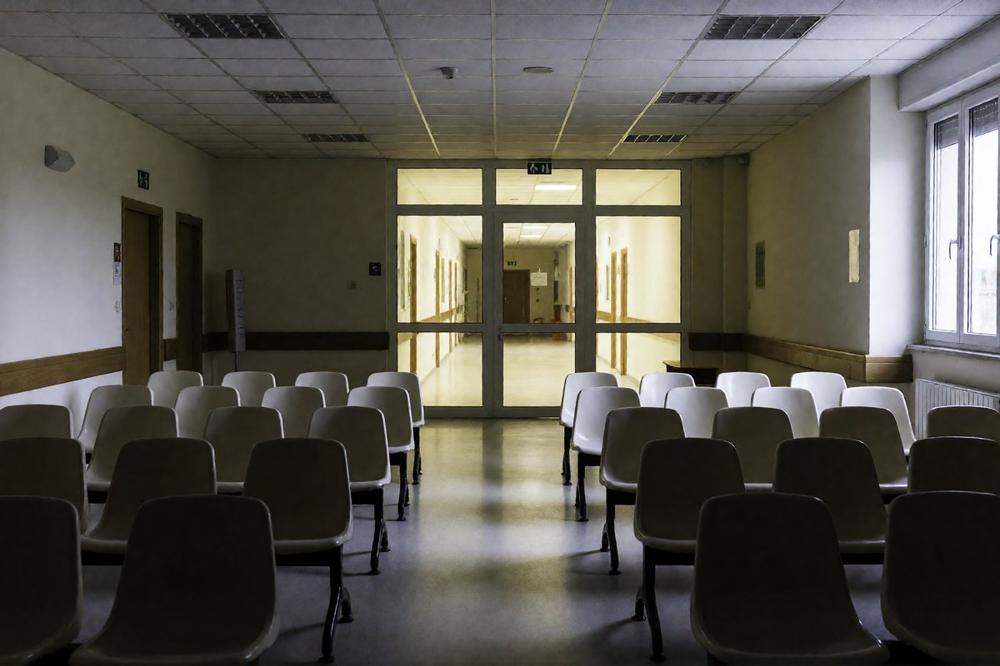

Sicilia · 10 novembre 2026
Gela, una notte di pronto soccorso con un medico solo

All'ospedale Vittorio Emanuele mancava il personale per il turno notturno. A segnalarlo ai carabinieri sono stati i pazienti in attesa; poi è arrivato il medico del mattino, che ha coperto da solo tutta la notte.
di Franco Zanghì
La sera del 10 novembre 2026, al pronto soccorso dell'ospedale Vittorio Emanuele di Gela, in provincia di Caltanissetta, sono arrivati i carabinieri. Li avevano chiamati alcuni pazienti in attesa di essere visitati. I militari hanno acquisito la segnalazione: per il turno di notte non c'erano medici.
I due che avevano coperto il turno precedente non potevano restare. Solo più tardi è arrivato un medico, quello che avrebbe dovuto coprire il turno del mattino successivo, e si è occupato da solo di tutta l'attività del pronto soccorso per l'intera notte.
Chi ha visto la scena
In reparto, quella sera, c'era anche l'assessore comunale alla sanità di Gela, Filippo Franzone, che si trovava lì per assistere un familiare. «Ho avuto modo di verificare di persona la grave situazione legata alla mancanza del personale», ha dichiarato all'ANSA.
Secondo la sua ricostruzione, i medici che smontavano non potevano proseguire: uno per problemi di salute, l'altro perché non strutturato e quindi non impiegabile nei turni notturni. «In ogni caso», ha aggiunto, «sarebbe stato difficile fare due turni consecutivi».
Al Quotidiano di Gela, Franzone ha detto che la città ha bisogno di un ospedale adeguato alle esigenze del territorio e che «in questo momento non lo è», chiedendo un intervento urgente alla Regione, all'assessorato regionale alla Salute e all'azienda sanitaria provinciale di Caltanissetta. Non è una protesta nuova: le testate locali raccontano da mesi la mobilitazione della città per il proprio ospedale.
Che cosa risponde l'azienda sanitaria
L'azienda sanitaria provinciale di Caltanissetta, riferisce l'ANSA, sta procedendo con i concorsi per le assunzioni e con la rete formativa che consente di impiegare i medici specializzandi.
Il punto
I concorsi sono in corso, e va bene. Ma un concorso non copre il turno di stanotte, e un pronto soccorso che resta sulle spalle di una persona sola non è un disagio organizzativo: è un rischio clinico, per chi arriva e per chi deve decidere da solo in pochi minuti. La domanda, a Gela come in molti altri ospedali siciliani, resta la più semplice di tutte: chi copre il turno successivo.
Fonti
- ANSA Sicilia, «Mancano medici per turno al pronto soccorso a Gela, arrivano i carabinieri», 11 novembre 2026
- Quotidiano di Gela, dichiarazioni dell'assessore comunale alla sanità, 11 novembre 2026
- LiveSicilia, cronache sulla situazione dell'ospedale di Gela, novembre 2026